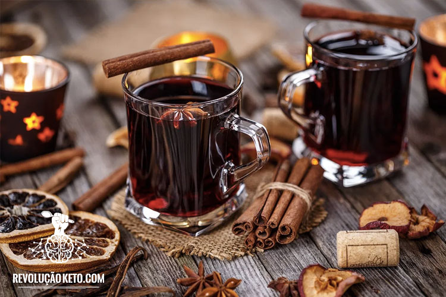

Festa junina do IFC
"A festa junina é uma das festas mais populares do Brasil. Ela é comemorada no mês de de julho e
wikipédia
tem como objetivo celebrar o fim das colheitas e agrsdecer aos santos. A festa junina é marcada por danças, comidas típicas e brincadeiras ."
- 1 de julho de 2023
- 15h - 21h
- IFC - Campos de Videira
Alimentos

Pastel
Cachorro-quente
